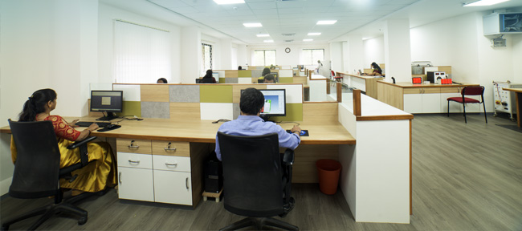
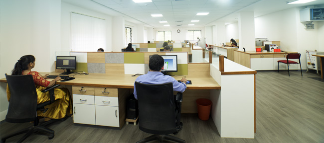

Powering the
growth of New India
Who we are
EAPL is a sector-agnostic specialist in Power and Industrial Automation. We have a 40-year legacy of delivering cutting-edge technology products and solutions, with a strong commitment to Innovation, Quality, and Continuous improvement.
Our vision
smart solutions

Our vision is to lead the way in innovative automation solutions. We are committed to seamlessly bridge the gap between the challenges of today and the possibilities of tomorrow. With a steadfast dedication to excellence, we aspire to shape a future that is increasingly automated and interconnected.
Our mission

At the heart of our mission lies the empowerment of industries through precision and reliability. As a leading manufacturer and solution provider in automation and process control instruments, we are dedicated to designing and manufacturing smart solutions that drive transformative advancements across global industries.
Our core values
Our core values serve as guiding principles that shape our identity and drive our actions. These values represent our unwavering commitment to excellence, integrity, continuous improvement, and social responsibility. Each value plays a crucial role in guiding our decisions, interactions, and contributions to our stakeholders and the world around us.

Consistent
reliability you can trust

Perfection in every
detail, every time

Integrity in all our actions
and relationships

Dedicated to
continuous improvement

Social
responsibility

New
Innovation
Our story
Founded by the Late Shri Madhav Kamat, it had a humble beginning in 1985. A breakthrough launch of A1D1-X and the partnership with Kruger + Co Ltd, Switzerland set the stage for our success story.
Beginning with timers nearly four decades ago, we now have a diverse portfolio including electronic timers, sequence timer, programmable annunciators, energy meters, temperature controllers, protection relays, power supplies, pump controllers, and digital time switches, catering to various electrical applications across industries.
We specialize in manufacturing high-quality products that embody Swiss perfection. With approvals from product safety regulators CSA, CE, and UL, EAPL ensures compliance with safety norms. Our products are synonymous with exceptional quality, high performance, and are engineered for effortless installation.
40 years
of experience and expertise
150+
products
100+
partners & service centers
1 Million+
installations
600+
people
Our leadership


Leader Name
Leader Role
Technology and innovation
EAPL’s state-of-the-art R&D facilities, proudly approved by the Department of Electronics, Government of India, stand as a testament to our unwavering dedication to innovation and technological advancement. Our well-equipped labs provide our teams with an unparalleled environment to explore and harness the latest advancements in industrial technology.
Our core R&D expertise and focus is in
 IOT Technologies
IOT Technologies
 Power Electronics
Power Electronics Sensor Technology
Sensor Technology
Partnership with Lahari to facilitate innovation

EAPL is a key contributor to the ESDM project "LAHARI" by the Government of India, housing an advanced NABL-accredited testing facility in Mysore. Spread over 45,000 sq.ft area, this facility is equipped with the infrastructure and capabilities that include EMI/EMC, reliability & environmental test lab, and component safety test lab. It is a "ONE-STOP PRODUCT DEVELOPMENT & COMPLIANCE TEST FACILITY," dedicated to the electronics system design and manufacturing sector. As an enabling member of the cluster, we have access to this world-class facility which enhances our ability for testing and certification and time-to-market delivery. Visit Lahari website: www.lahariclfacil.com
Our commitment to R&D extends beyond mere capability; it is a reflection of our proactive approach to staying at the forefront of innovation and delivering end-to-end solutions that exceed expectations.
Our infrastructure
 

EAPL's cutting-edge facility spread across 50,000 sq.ft is capable of producing over 500,000 units annually. Certified under ISO 9001:2016, ISO 14001:2015, and ISO 45001:2018, we prioritize quality, safety, and environmental responsibility. Equipped with the latest SMT technology and supported by a dedicated Quality Control (QC) department, EAPL ensures rigorous quality checks at every stage of production, from raw materials to the final product.
Our manufacturing capabilities are further strengthened with our very own tool room and plastic injection molding facility adhering to UL graded materials and safety protocols. Additionally, the in-house EMI/EMC lab enhances product validation, ensuring excellence in quality.